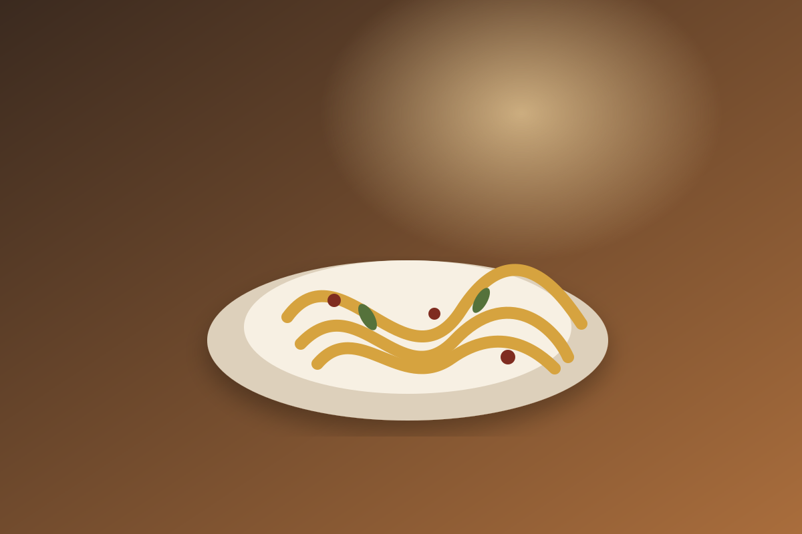
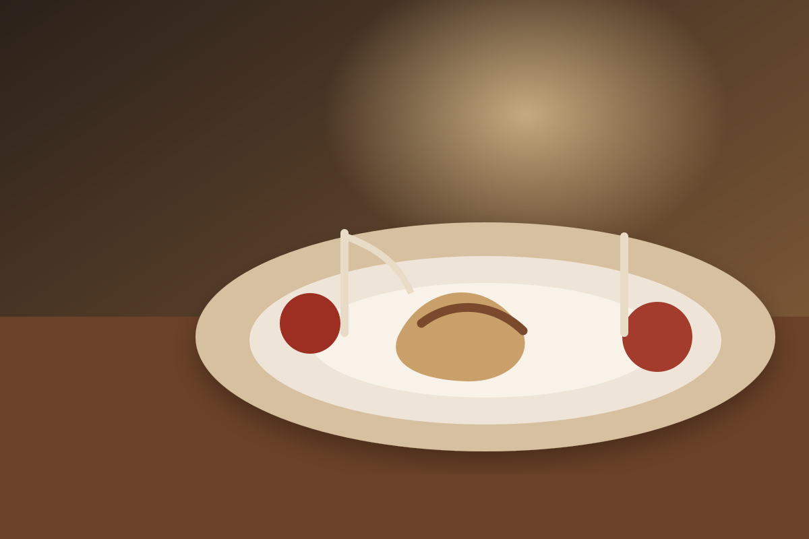
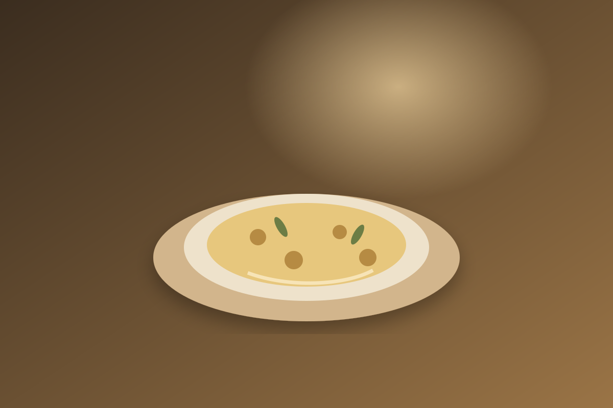
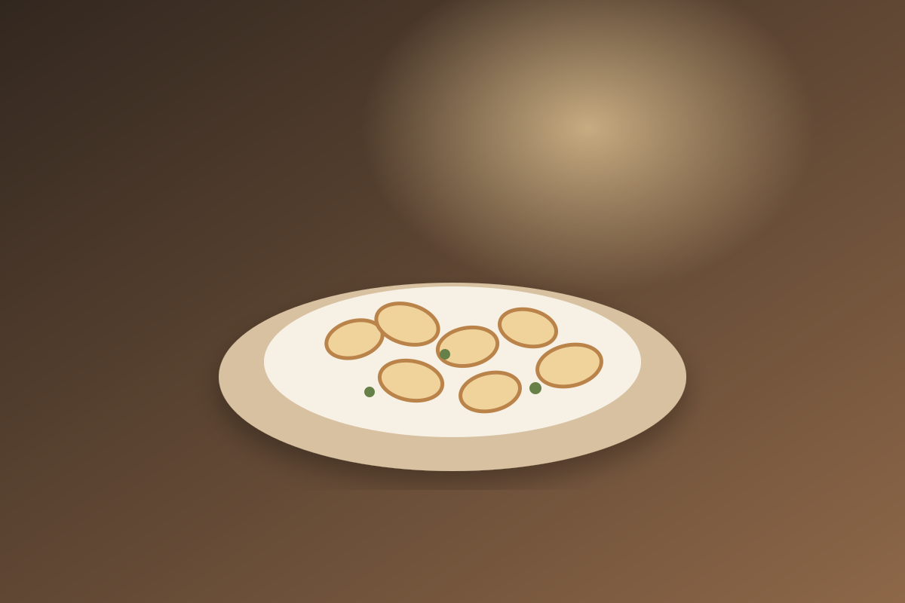
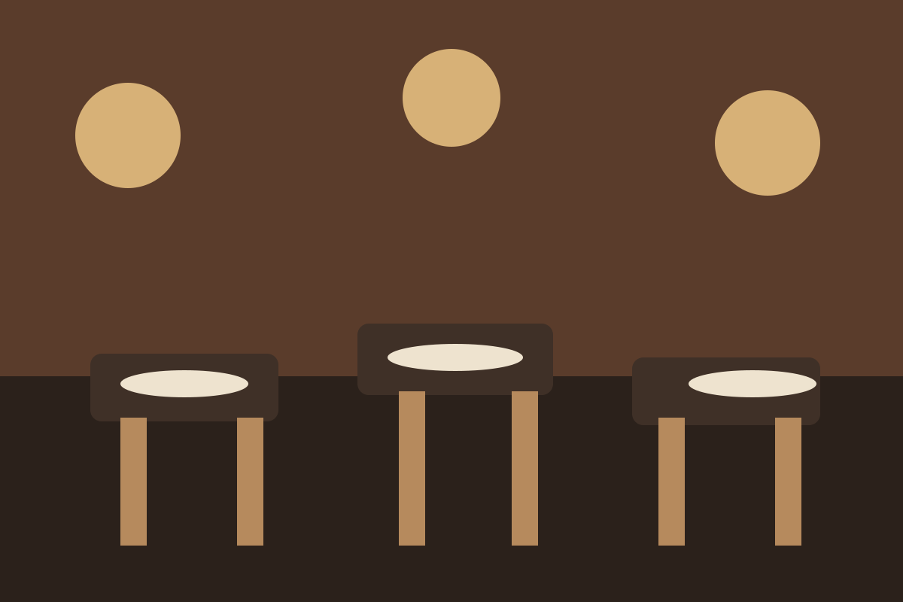
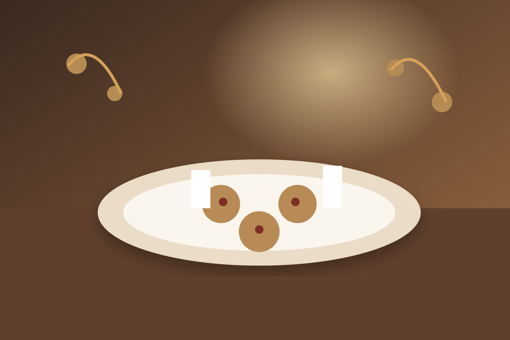

01
Plin
La tradizione piemontese in un piccolo gesto di pasta ripiena.
RISTORANTE · APERICENA · CERIMONIE
Cucina italiana, convivialità e sapori piemontesi in un ambiente intimo e accogliente.

LA CUCINA
Sapori autentici, ingredienti scelti e una cucina pensata per stare bene a tavola. Dal primo calice all'ultimo boccone, Peynett è un invito a rallentare.

La tradizione piemontese in un piccolo gesto di pasta ripiena.

Comfort, cremosità e ingredienti del territorio.

Ricette generose, semplici e profondamente italiane.

L'ESPERIENZA PEYNETT
Un'atmosfera calda, tavole conviviali e il piacere di una cena senza fretta. Peynett è pensato per una serata in coppia, una cena tra amici o un momento speciale da condividere.
MOMENTI SPECIALI
Compleanni, ricorrenze, cene di gruppo e cerimonie: raccontaci il tuo momento e troviamo insieme la soluzione giusta.
Parla con noi su WhatsApp →
QUANDO VENIRE